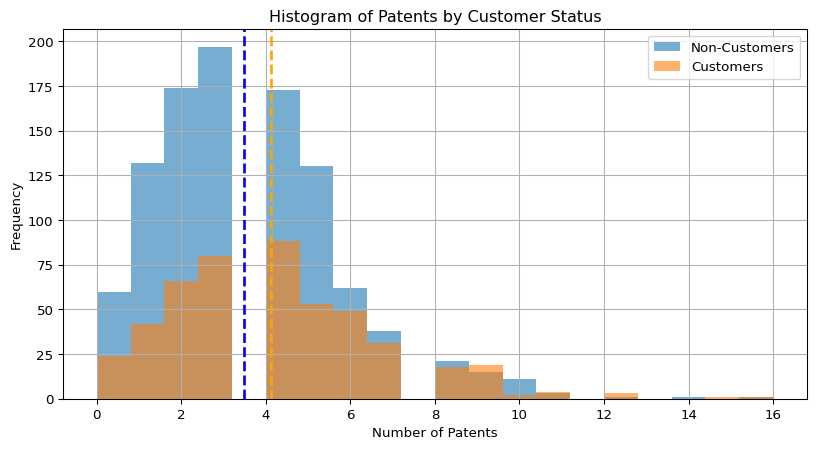
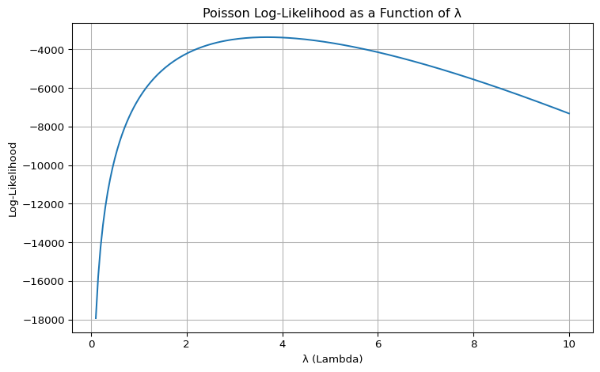

Blueprinty is a small firm that makes software for developing blueprints specifically for submitting patent applications to the US patent office. Their marketing team would like to make the claim that patent applicants using Blueprinty’s software are more successful in getting their patent applications approved. Ideal data to study such an effect might include the success rate of patent applications before using Blueprinty’s software and after using it. Unfortunately, such data is not available.
However, Blueprinty has collected data on 1,500 mature (non-startup) engineering firms. The data include each firm’s number of patents awarded over the last 5 years, regional location, age since incorporation, and whether or not the firm uses Blueprinty’s software. The marketing team would like to use this data to make the claim that firms using Blueprinty’s software are more successful in getting their patent applications approved.
Data
A.
import pandas as pdimport numpy as npfrom scipy import optimizefrom scipy.special import gammalndata_path ='blueprinty.csv'df_blueprinty = pd.read_csv(data_path)df_blueprinty.head()
import matplotlib.pyplot as pltplt.figure(figsize=(10, 5))plt.hist(non_customers['patents'], bins=20, alpha=0.6, label='Non-Customers')plt.hist(customers['patents'], bins=20, alpha=0.6, label='Customers')plt.axvline(mean_non_customers, color='blue', linestyle='dashed', linewidth=2)plt.axvline(mean_customers, color='orange', linestyle='dashed', linewidth=2)plt.title('Histogram of Patents by Customer Status')plt.xlabel('Number of Patents')plt.ylabel('Frequency')plt.legend()plt.grid(True)plt.show()

Analysis for B:
Mean for patents (non-customers): ≈ 3.47
Mean for patents (customers): ≈ 4.13
Regarding the means of number of patents by customer status, it shows that firms that use Blueprinty’s software have a higher average number of awarded patents than those that don’t. Also, the histogram shows a right shift for customers, indicating a general higher counts of patent. These findings potentially indicates the positive association between usage of Blueprinty’s software and patent success.
Blueprinty customers are not selected at random. It may be important to account for systematic differences in the age and regional location of customers vs non-customers.
Comparing regions and ages by customer status, we observed that:
Region:
Non-customers are more evenly spread across regions.
Northeast region has a significantly higher number of Blueprinty software customers compared to other regions.
Age:
Blueprinty software Customers have a slightly higher average age (26.9 years) compared to non-customers (26.1 years).
Blueprinty software Customers’ age are slightly older, with a wider spread in age distribution by higher standard deviation.
Estimation of Simple Poisson Model
Since our outcome variable of interest can only be small integer values per a set unit of time, we can use a Poisson density to model the number of patents awarded to each engineering firm over the last 5 years. We start by estimating a simple Poisson model via Maximum Likelihood.
A.
Note that \(f(Y|\lambda) = e^{-\lambda}\lambda^Y/Y!\). we can have the likelihood function for \(Y \sim \text{Poisson}(\lambda)\) is \(L(\lambda) = \prod_{i=1}^{n} \frac{e^{-\lambda} \lambda^{Y_i}}{Y_i!}\).
B.
Coding for log-likelihood function for the Poisson Model (This is a function of lambda and Y):
def poisson_loglikelihood(lambda_, Y): Y = np.array(Y) log_likelihood = np.sum(-lambda_ + Y * np.log(lambda_) - gammaln(Y +1))return log_likelihood
C.
Y = df_blueprinty["patents"].values # observed patent countslambda_vals = np.linspace(0.1, 10, 200)log_likelihoods = [poisson_loglikelihood(lam, Y) for lam in lambda_vals]# Plot the log-likelihood curveplt.figure(figsize=(8, 5))plt.plot(lambda_vals, log_likelihoods)plt.xlabel("λ (Lambda)")plt.ylabel("Log-Likelihood")plt.title("Poisson Log-Likelihood as a Function of λ")plt.grid(True)plt.tight_layout()plt.show()

Above is the plot of the Poisson log-likelihood as a function of λ based on the observed patent counts. The curve peaks around λ ≈ 3.5 to 4, which indicates that the Maximum Likelihood Estimator (MLE) for λ.
D.
After taking the first derivative of log-likelihood, set it equal to zero and solve for lambda, the Maximum Likelihood Estimator for \(\lambda\) is \(\hat{\lambda}_{\text{MLE}} = \bar{Y}\). It indicates that the mean of a Poisson distribution is lambda.
E.
result = optimize.minimize_scalar(lambda l: -poisson_loglikelihood(l, Y), bounds=(0.1, 10), method='bounded')lambda_mle = result.xprint("λ_MLE from optimization:", lambda_mle)
λ_MLE from optimization: 3.6846662261327716
Then, we found the MLE with a value of 3.6846662261327716 by optimizing the likelihood function.
Estimation of Poisson Regression Model
Next, we extend our simple Poisson model to a Poisson Regression Model such that \(Y_i = \text{Poisson}(\lambda_i)\) where \(\lambda_i = \exp(X_i'\beta)\). The interpretation is that the success rate of patent awards is not constant across all firms (\(\lambda\)) but rather is a function of firm characteristics \(X_i\). Specifically, we will use the covariates age, age squared, region, and whether the firm is a customer of Blueprinty.
Then, we’ll update log-likelihood function with an additional argument to take in a covariate matrix X.
A.
def poisson_regression_loglikelihood(beta, Y, X): beta = np.array(beta) Y = np.array(Y) X = np.array(X) lambda_ = np.exp(X @ beta) return np.sum(-lambda_ + Y * np.log(lambda_) - gammaln(Y +1))
Through finding the MLE vector and the Hessian of the Poisson model with covariates, above is the table of coefficients and standard errors for using the Hessain to find standard errors of the beta parameter estimates.
By checking the poisson regression model results using sm.GLM() function, we find that age, age_squared, and customer status are statistically significant different from patent counts (p-value < 0.05). As firm age increases, there are expected patent counts increase. Also, customers of Blueprinty tend to have significantly higher expected patent counts than non-customers. Additionally, regions are not satistically significant different from patent counts (p-value > 0.05) when other variables are controlled.
D.
X_0 = X.copy()X_1 = X.copy()X_0['iscustomer'] =0X_1['iscustomer'] =1y_pred_0 = glm_result.predict(X_0)y_pred_1 = glm_result.predict(X_1)effect = y_pred_1 - y_pred_0avg_effect = np.mean(effect)print("Average predicted increase in patents from using Blueprinty software:", avg_effect)
Average predicted increase in patents from using Blueprinty software: 0.7927680710452972
Analysis for D:
Based on the poisson regression model, we can conclude that the usage of Blueprinty software is associated with an average increase of approximately 0.79 patents per firm.
AirBnB Case Study
Introduction
AirBnB is a popular platform for booking short-term rentals. In March 2017, students Annika Awad, Evan Lebo, and Anna Linden scraped of 40,000 Airbnb listings from New York City. The data include the following variables:
Variable Definitions
- `id` = unique ID number for each unit
- `last_scraped` = date when information scraped
- `host_since` = date when host first listed the unit on Airbnb
- `days` = `last_scraped` - `host_since` = number of days the unit has been listed
- `room_type` = Entire home/apt., Private room, or Shared room
- `bathrooms` = number of bathrooms
- `bedrooms` = number of bedrooms
- `price` = price per night (dollars)
- `number_of_reviews` = number of reviews for the unit on Airbnb
- `review_scores_cleanliness` = a cleanliness score from reviews (1-10)
- `review_scores_location` = a "quality of location" score from reviews (1-10)
- `review_scores_value` = a "quality of value" score from reviews (1-10)
- `instant_bookable` = "t" if instantly bookable, "f" if not
Assume the number of reviews is a good proxy for the number of bookings, then we performed some EDA for Airbnb data:
Regarding the exploratory data analysis of the data, it shows that the relevant variables including host_since, bathrooms, review_scores_cleanliness, review_scores_location, review_scores_value have missing values within it. Then, we performed the handle of dropping these relevant variables’ missing values and built a poisson regression model for the number of bookings as proxied by the number of reviews.